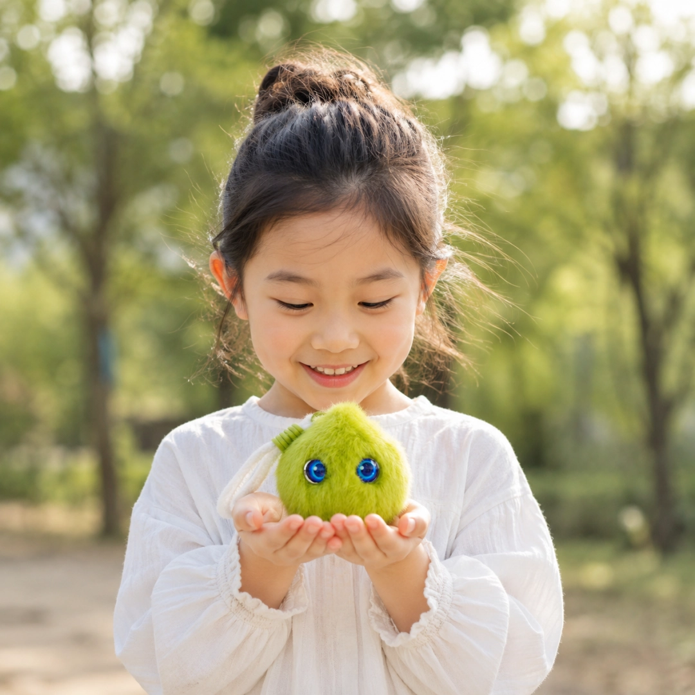
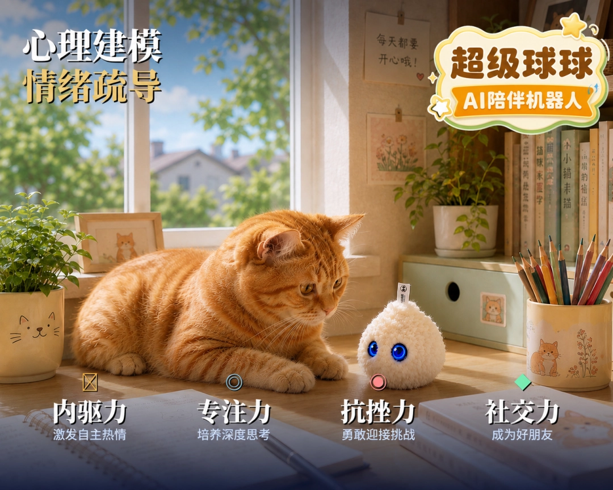

本次评选围绕企业核⼼技术、研发创新能⼒、市场落地成果、⻓期成⻓潜⼒等多个维度进⾏综合考评，深度贴合当下发展新质⽣产⼒的产业导向。⾃成⽴以来，超级有爱深耕⼉童情绪陪伴AI硬件赛道，始终把⾃主研发作为发展核⼼，持续投⼊技术研发，打造差异化亲⼦智能产品。
此前，旗下核⼼产品超级球球亮相罗湖AI智能硬件创新⽇，经过现场嘉宾真实体验投票，⼀举拿下最佳设计奖和最佳体验奖，充分印证了我们在产品设计、⼈机交互上的创新优势。
权威奖项加冕，硬核创新彰显企业成⻓价值创办⼗余载的CFS财经峰会，汇聚三百余家主流媒体、两百余位重磅演讲嘉宾，多年来持续⻅证中国创新企业发展，参评企业覆盖全⾏业优质实体、科创公司。本次评选中，组委会格外看重企业⾃主知识产权储备、常态化研发投⼊、创新产品市场落地成效，⾼度契合当下发展新质⽣产⼒的时代趋势。
能够在众多参选企业中脱颖⽽出，拿下“⾼成⻓价值企业”称号，既是财经峰会评审专家对超级有爱技术路线、商业模式的充分肯定，也是市场、资本对⼉童AI硬件赛道发展前景与企业核⼼竞争⼒的双重认可。
步履不停，以科创⼒量奔赴⻓期成⻓荣誉是阶段性的⿎励，创新是⻓久不变的底⾊。未来，超级有爱将持续深耕⼉童智能硬件领域，不断加⼤⼈⼯智能、⼉童⼈机交互、智能硬件相关研发投⼊，迭代优化产品体验，完善知识产权布局，依托⾃研核⼼技术打造更适配万千家庭育⼉需求的AI陪伴产品我们将坚守科技创新初⼼，以硬核研发实⼒助⼒新质⽣产⼒发展，持续输出有温度、有技术⼒的⼉童智能创新产品，脚踏实地⾛好⾼质量成⻓之路，不负“2026 ⾼成⻓价值企业”这份⾏业认可！


